Qt Quick 3D Introduction with glTF Assets
The Qt Quick 3D - Introduction example provides a quick introduction to creating QML-based applications with Qt Quick 3D, but it does so using only built-in primitives, such as spheres and cylinders. This page provides an introduction using glTF 2.0 assets, using some of the models from the Khronos glTF Sample Models repository.
Our Skeleton Application
Let's start with the following application. This code snippet is runnable as-is with the qml command-line tool. The result is a very green 3D view with nothing else in it.
import QtQuick import QtQuick3D import QtQuick3D.Helpers Item { width: 1280 height: 720 View3D { anchors.fill: parent environment: SceneEnvironment { backgroundMode: SceneEnvironment.Color clearColor: "green" } PerspectiveCamera { id: camera } WasdController { controlledObject: camera } } }
Importing an Asset
We are going to use two glTF 2.0 models from the Sample Models repository: Sponza and Suzanne.
These models typically come with a number of texture maps and the mesh (geometry) data stored in a separate binary file, in addition to the .gltf file:
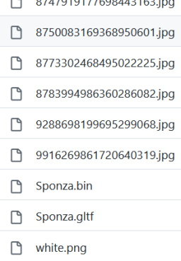
How do we get all this into our Qt Quick 3D scene?
There are a number of options:
- Generate QML components that can be instantiated in the scene. The command-line tool to perform this conversion is the Balsam tool. Besides generating a .qml file, that is effectively a subscene, this also repacks the mesh (geometry) data into an optimized, fast-to-load format, and copies the texture map image files as well.
- Perform the same using
balsamui, a GUI frontend for Balsam. - If using Qt Design Studio, the asset import process is integrated into the visual design tools. Importing can be triggered, for example, by dragging and dropping the .gltf file onto the appropriate panel.
- For glTF 2.0 assets in particular, there is a runtime option as well: the RuntimeLoader type. This allows loading a .gltf file (and the associated binary and texture data files) at runtime, without doing any pre-processing via tools such as Balsam. This is very handy in applications that wish to open and load user-provided assets. On the other hand, this approach is significantly less efficient when it comes to performance. Therefore, we will not be focusing on this approach in this introduction. Check the Qt Quick 3D - RuntimeLoader Example for an example of this approach.
Both the balsam and balsamui applications are shipped with Qt, and should be present in the directory with other similar executable tools, assuming Qt Quick 3D is installed or built. In many cases, running balsam from the command-line on the .gltf file is sufficient, without having to specify any additional arguments. It is worth being aware however of the many command-line, or interactive if using balsamui or Qt Design Studio, options. For example, when working with baked lightmaps to provide static global illumination, it is likely that one will want to pass --generateLightmapUV to get the additional lightmap UV channel generated at asset import time, instead of performing this potentially consuming process at run-time. Similarly, --generateMeshLevelsOfDetail is essential when it is desirable to have simplified versions of the meshes generated in order to have automatic LOD enabled in the scene. Other options allow generating missing data (e.g. --generateNormals) and performing various optimizations.
In balsamui the command-line options are mapped to interactive elements:
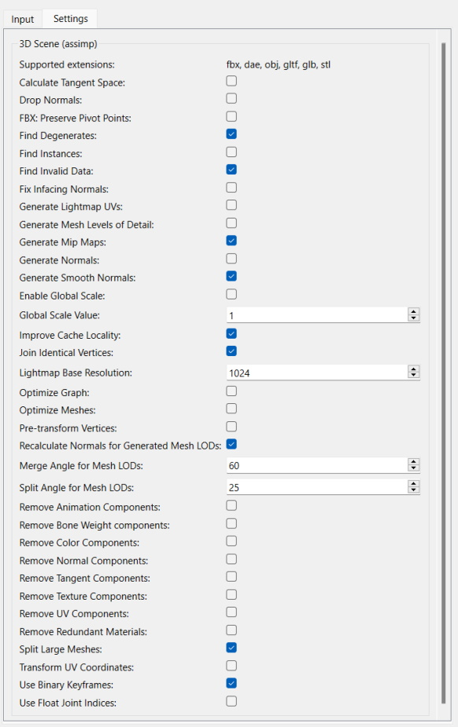
Importing via balsam
Let's get started! Assuming that the https://github.com/KhronosGroup/glTF-Sample-Models git repository is checked out somewhere, we can simply run balsam from our example application directory, by specifying an absolute path to the .gltf files:
balsam c:\work\glTF-Sample-Models\2.0\Sponza\glTF\Sponza.gltf
This gives us a Sponza.qml, a .mesh file under the meshes subdirectory, and the texture maps copied under maps.
Note: This qml file is not runnable on its own. It is a component, that should be instantiated within a 3D scene associated with a View3D.
Our project structure is very simple here, as the asset qml files live right next to our main .qml scene. This allows us to simply instantiate the Sponza type using the standard QML component system. (at run-time this will then look for Sponza.qml in the filesystem)
Just adding the model (subscene) is pointless however, since by default the materials feature the full PBR lighting calculations, so nothing is shown from our scene without a light such as DirectionalLight, PointLight, or SpotLight, or having image-based lighting enabled via the environment.
For now, we choose to add a DirectionalLight with the default settings. (meaning the color is white, and the light emits in the direction of the Z axis)
import QtQuick import QtQuick3D import QtQuick3D.Helpers Item { width: 1280 height: 720 View3D { anchors.fill: parent environment: SceneEnvironment { backgroundMode: SceneEnvironment.Color clearColor: "green" } PerspectiveCamera { id: camera } DirectionalLight { } Sponza { } WasdController { controlledObject: camera } } }
Running this with the qml tool will load and run, but the scene is all empty by default since the Sponza model is behind the camera. The scale is also not ideal, e.g. moving around with WASD keys and the mouse (enabled by the WasdController) does not feel right.
To remedy this, we scale the Sponza model (subscene) by 100 along the X, Y, and Z axis. In addition, the camera's starting Y position is bumped to 100.
import QtQuick import QtQuick3D import QtQuick3D.Helpers Item { width: 1280 height: 720 View3D { anchors.fill: parent environment: SceneEnvironment { backgroundMode: SceneEnvironment.Color clearColor: "green" } PerspectiveCamera { id: camera y: 100 } DirectionalLight { } Sponza { scale: Qt.vector3d(100, 100, 100) } WasdController { controlledObject: camera } } }
Running this gives us:
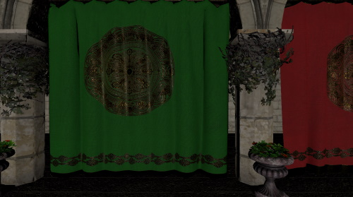
With the mouse and the WASDRF keys we can move around:
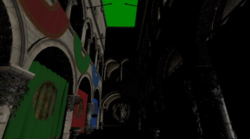
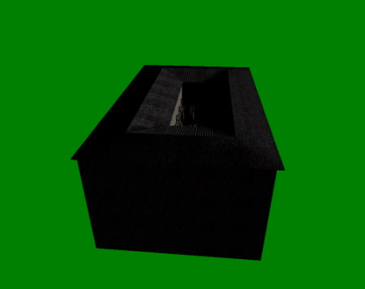
Note: We mentioned subscene a number of times above as an alternative to "model". Why is this? While not obvious with the Sponza asset, which in its glTF form is a single model with 103 submeshes, mapping to a single Model object with 103 elements in its materials list, an asset can contain any number of models, each with multiple submeshes and associated materials. These Models can form parent-child relationships and can be combined with additional nodes to perform transforms such as translate, rotate, or scale. It is therefore more appropriate to look at the imported asset as a complete subscene, an arbitrary tree of nodes, even if the rendered result is visually perceived as a single model. Open the generated Sponza.qml, or any other QML file generated from such assets, in a plain text editor to get an impression of the structure (which naturally always depends on how the source asset, in this case the glTF file, was designed).
Importing via balsamui
For our second model, let's use the graphical user interface of balsam instead.
Running balsamui opens the tool:
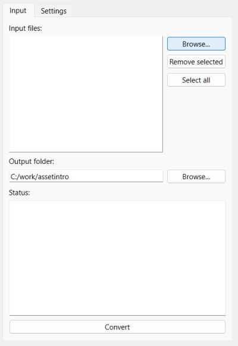
Let's import the Suzanne model. This is a simpler model with two texture maps.
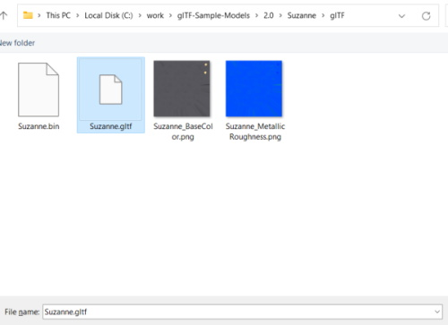
As there is no need for any additional configuration options, we can just Convert. The result is the same as running balsam: a Suzanne.qml and some additional files generated in the specific output directory.
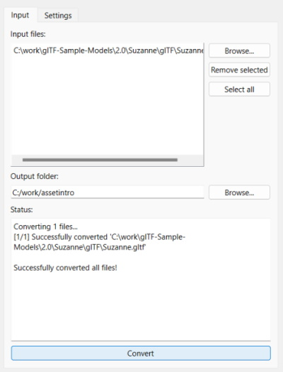
From this point on, working with the generated assets is the same as in the previous section.
import QtQuick import QtQuick3D import QtQuick3D.Helpers Item { width: 1280 height: 720 View3D { anchors.fill: parent environment: SceneEnvironment { backgroundMode: SceneEnvironment.Color clearColor: "green" } PerspectiveCamera { id: camera y: 100 } DirectionalLight { } Sponza { scale: Qt.vector3d(100, 100, 100) } Suzanne { y: 100 scale: Qt.vector3d(50, 50, 50) eulerRotation.y: -90 } WasdController { controlledObject: camera } } }
Again, a scale is applied to the instantiated Suzanne node, and the Y position is altered a bit so that the model does not end up in the floor of the Sponza building.
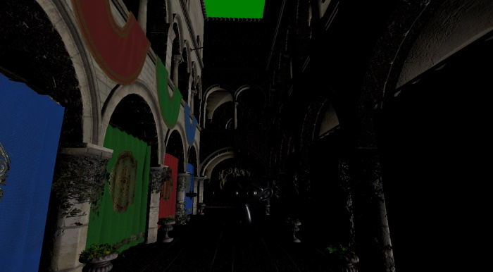
All properties can be changed, bound to, and animated, just like with Qt Quick. For example, let's apply a continuous rotation to our Suzanne model:
Suzanne { y: 100 scale: Qt.vector3d(50, 50, 50) NumberAnimation on eulerRotation.y { from: 0 to: 360 duration: 3000 loops: Animation.Infinite } }
Making it Look Better
More light
Now, our scene is a bit dark. Let's add another light. This time a PointLight, and one that casts a shadow.
import QtQuick import QtQuick3D import QtQuick3D.Helpers Item { width: 1280 height: 720 View3D { anchors.fill: parent environment: SceneEnvironment { backgroundMode: SceneEnvironment.Color clearColor: "green" } PerspectiveCamera { id: camera y: 100 } DirectionalLight { } Sponza { scale: Qt.vector3d(100, 100, 100) } PointLight { y: 200 color: "#d9c62b" brightness: 5 castsShadow: true shadowFactor: 75 } Suzanne { y: 100 scale: Qt.vector3d(50, 50, 50) NumberAnimation on eulerRotation.y { from: 0 to: 360 duration: 3000 loops: Animation.Infinite } } WasdController { controlledObject: camera } } }
Launching this scene and moving the camera around a bit reveals that this is indeed starting to look better than before:
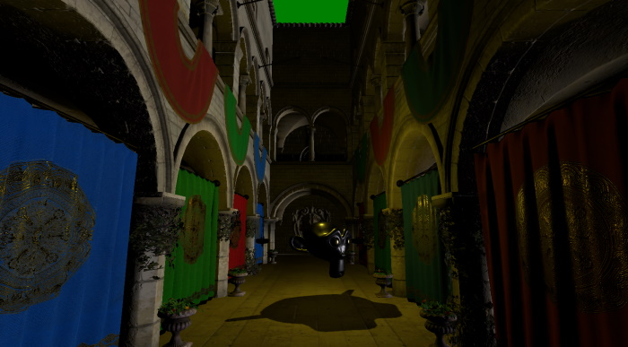
Light debugging
The PointLight is placed slightly above the Suzanne model. When designing the scene using visual tools, such as Qt Design Studio, this is obvious, but when developing without any design tools it may become handy to be able to quickly visualize the location of lights and other nodes.
This we can do by adding a child node, a Model to the PointLight. The position of the child node is relative to the parent, so the default (0, 0, 0) is effectively the position of the PointLight in this case. Enclosing the light within some geometry (the built-in cube in this case) is not a problem for the standard real-time lighting calculations since this system has no concept of occlusion, meaning the light has no problems with traveling through "walls". If we used pre-baked lightmaps, where lighting is calculated using raytracing, that would be a different story. In that case we would need to make sure the cube is not blocking the light, perhaps by moving our debug cube a bit above the light.
PointLight { y: 200 color: "#d9c62b" brightness: 5 castsShadow: true shadowFactor: 75 Model { source: "#Cube" scale: Qt.vector3d(0.01, 0.01, 0.01) materials: PrincipledMaterial { lighting: PrincipledMaterial.NoLighting } } }
Another trick we use here is turning off lighting for the material used with the cube. It will just appear using the default base color (white), without being affected by lighting. This is handy for objects used for debugging and visualizing purposes.
The result, note the small, white cube appearing, visualizing the position of the PointLight:
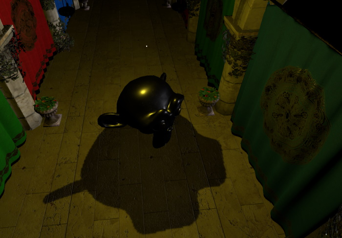
Skybox and image-based lighting
Another obvious improvement is doing something about the background. That green clear color is not quite ideal. How about some environment that also contributes to lighting?
As we do not necessarily have suitable HDRI panorama image available, let's use a procedurally generated high dynamic range sky image. This is easy to do with the help of ProceduralSkyTextureData and Texture's support for non-file based, dynamically generated image data. Instead of specifying source, we rather use the textureData property.
environment: SceneEnvironment {
backgroundMode: SceneEnvironment.SkyBox
lightProbe: Texture {
textureData: ProceduralSkyTextureData {
}
}
}
Note: The example code prefers defining objects inline. This is not mandatory, the SceneEnvironment or ProceduralSkyTextureData objects could have also been defined elsewhere in the object tree, and then referenced by id.
As a result, we have both a skybox and improved lighting. (the former due to the backgroundMode being set to SkyBox and light probe being set to a valid Texture; the latter due to light probe being set to a valid Texture)
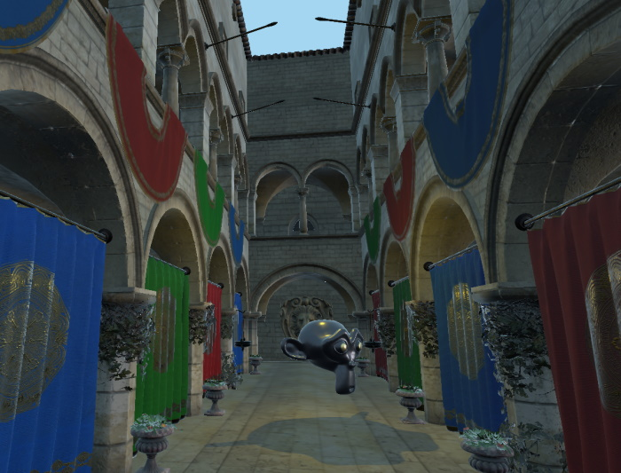
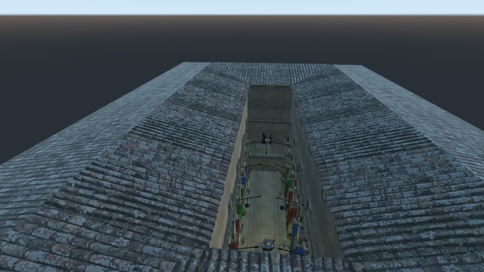
Basic Performance Investigations
To get some basic insights into the resource and performance aspects of the scene, it is a good idea to add a way to show an interactive DebugView item early on in the development process. Here we choose to add a Button that toggles the DebugView, both anchored in the top-right corner.
import QtQuick import QtQuick.Controls import QtQuick3D import QtQuick3D.Helpers Item { width: 1280 height: 720 View3D { id: view3D anchors.fill: parent environment: SceneEnvironment { backgroundMode: SceneEnvironment.SkyBox lightProbe: Texture { textureData: ProceduralSkyTextureData { } } } PerspectiveCamera { id: camera y: 100 } DirectionalLight { } Sponza { scale: Qt.vector3d(100, 100, 100) } PointLight { y: 200 color: "#d9c62b" brightness: 5 castsShadow: true shadowFactor: 75 Model { source: "#Cube" scale: Qt.vector3d(0.01, 0.01, 0.01) materials: PrincipledMaterial { lighting: PrincipledMaterial.NoLighting } } } Suzanne { y: 100 scale: Qt.vector3d(50, 50, 50) NumberAnimation on eulerRotation.y { from: 0 to: 360 duration: 3000 loops: Animation.Infinite } } WasdController { controlledObject: camera } } Button { anchors.right: parent.right text: "Toggle DebugView" onClicked: debugView.visible = !debugView.visible DebugView { id: debugView source: view3D visible: false anchors.top: parent.bottom anchors.right: parent.right } } }
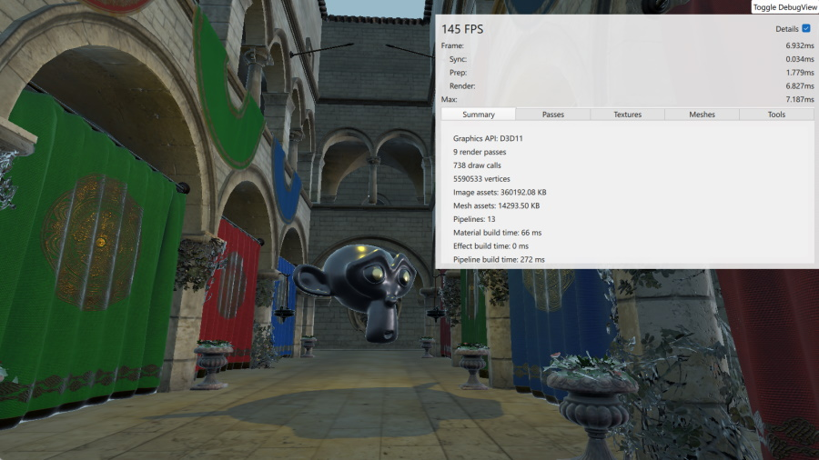
This panel shows live timings, allows examining the live list of texture maps and meshes, and gives an insight into the render passes that need to be performed before the final color buffer can be rendered.
Due to making the PointLight a shadow casting light, there are multiple render passes involved:
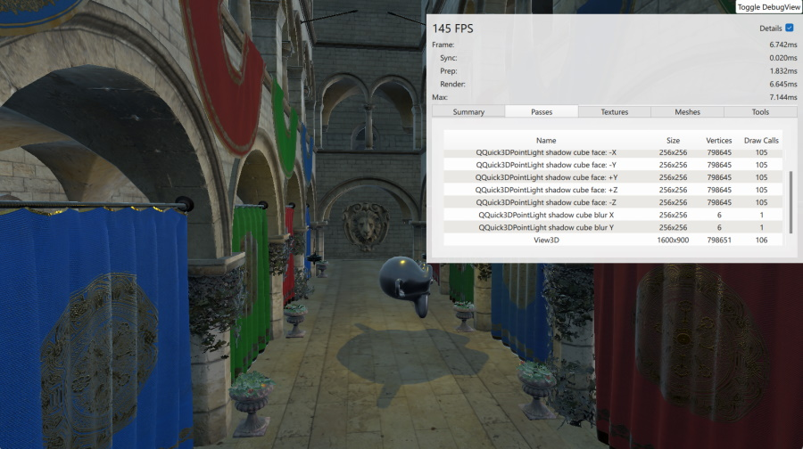
In the Textures section we see the texture maps from the Suzanne and Sponza assets (the latter has a lot of them), as well as the procedurally generated sky texture.
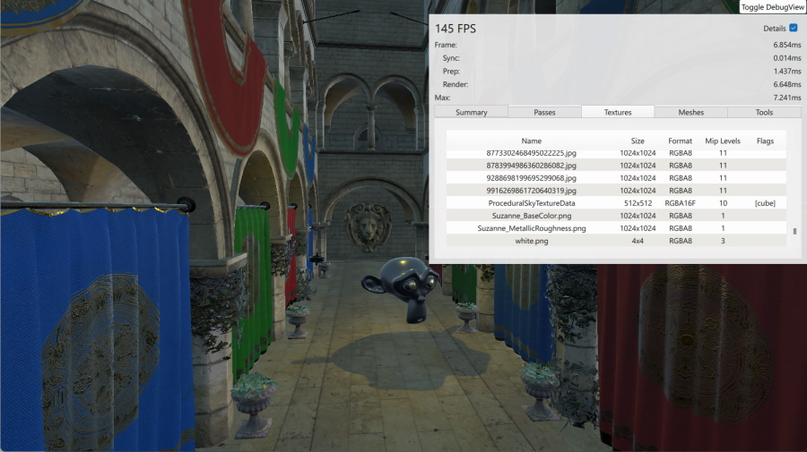
The Models page presents no surprises:
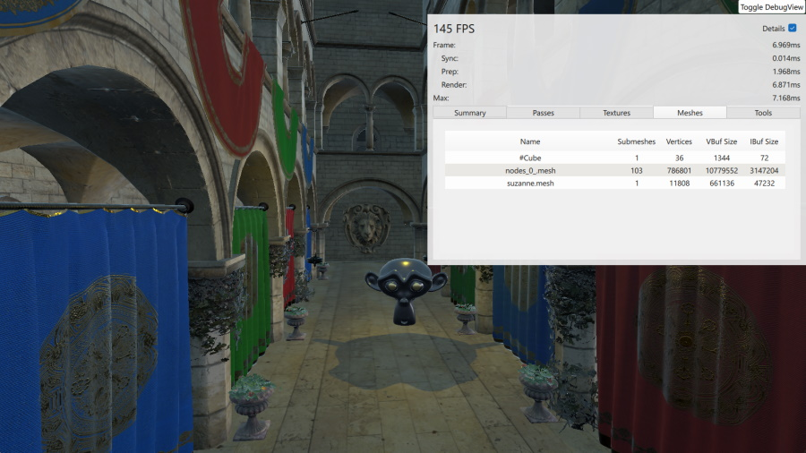
On the Tools page there are some interactive controls to toggle wireframe mode and various material overrides.
Here with wireframe mode enabled and forcing rendering to only use the base color component of the materials:
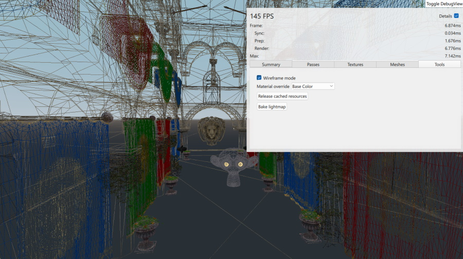
This concludes our tour of the basics of building a Qt Quick 3D scene with imported assets.